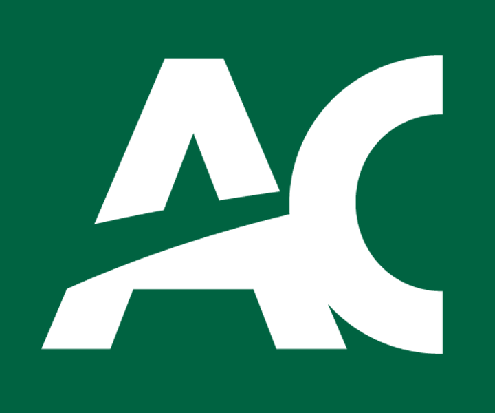
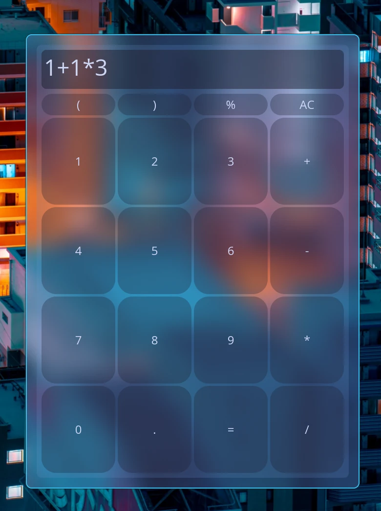
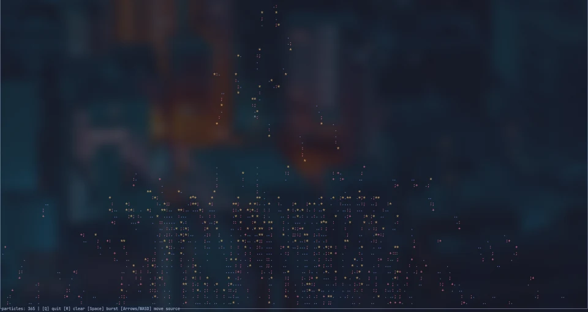
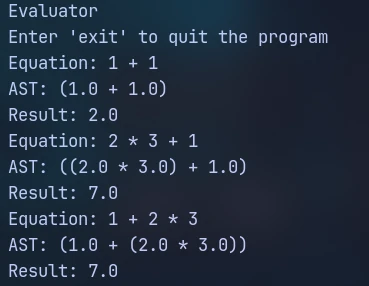
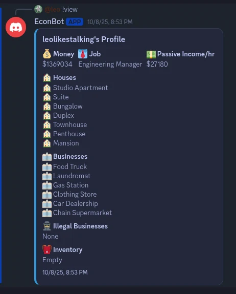

CURRENT STUDIES
Algonquin College
Computer Programming
COMPUTER PROGRAMMING STUDENT · ALGONQUIN COLLEGE
I'm Leo, a Rust and C++ developer drawn to native interfaces, useful CLIs that do their job well, and the inner workings of programming languages.
A little more about me01 / ABOUT ME
I'm a Computer Programming student at Algonquin College. I like software that feels direct. For example, a responsive interface or a focused terminal tool.
These days, I'm especially curious about language internals and the path from source code to a running program.
More about me02 / EDUCATION

CURRENT STUDIES
Computer Programming
HIGH SCHOOL
03 / TAKEAWAYS
04 / CURRENT CURIOSITY
Tracing how source becomes tokens, syntax trees, and eventually a result.
Designing desktop and terminal tools around clarity, useful feedback, and fast response.
Experimenting with how input, gravity, and timing shape particle motion.
05 / THINGS I WORK WITH
06 / SELECTED WORK

A desktop calculator built with Rust and Iced, bringing everyday arithmetic into a native GUI.
VIEW ON GITHUB
A terminal particle simulation with gravity, trails, wall bounces, and keyboard-driven controls.
VIEW ON GITHUB
A recursive-descent expression evaluator that tokenizes input, builds an AST, and returns a result.
VIEW ON GITHUB07 / PROJECT DEEP DIVE

EconBot is a Discord economy bot built with JavaScript and discord.js, where players can take jobs, earn promotions, build passive income through homes and businesses, trade loans, and play casino games. I used SQLite to persist player profiles, inventory, property, and loan records, while Discord buttons and menus make games and shops interactive.
I made EconBot around 6 months after I began my coding journey. This lead to a lot of design choices that I would not have made today. For example, I had not yet learned about classes, so every user was simply stored in object literals. A challenge that I faced was the handling of the database that held user information. I had never used any sort of query language, so I had to learn the syntax and general ideas behind databases.
EconBot will always hold a special place in my heart due to how successful it was, providing a fun competition between me and my friends to see who could gain the most money. One day I hope to revisit the project with all that I've learned in this year and a half since making the game.
Explore EconBot on GitHub08 / CO-OP OPPORTUNITY
I'm seeking a co-op position where I can program applications and contribute to building useful software.
Let's talk09 / THE PERSON BEHIND THE CODE
I wanted to create this section to tell you more about who I am. As you know, my name is Leo. I have a genuine passion for programming and I would truly be lost without it.
In addition to programming, I enjoy:
Some fun facts about me:
10 / GET IN TOUCH
Have a question or want to talk about a project? Send me a note.